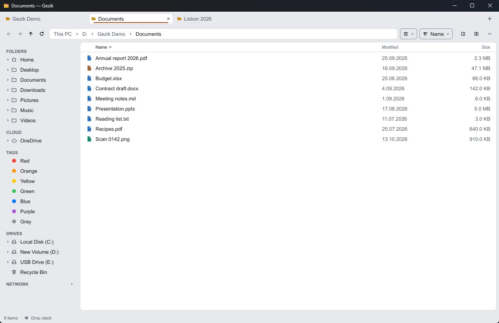
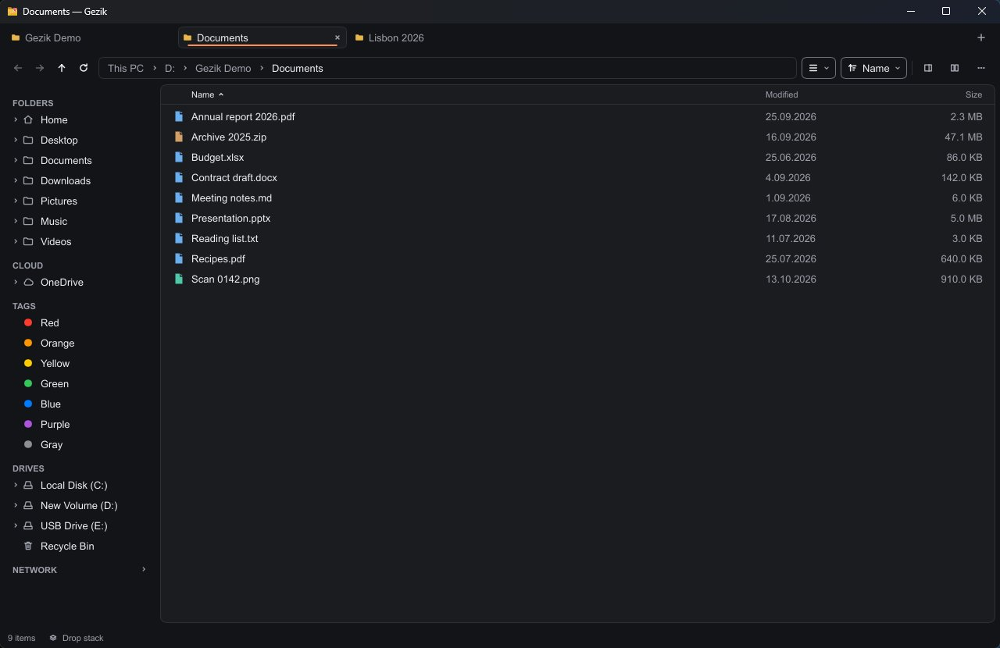
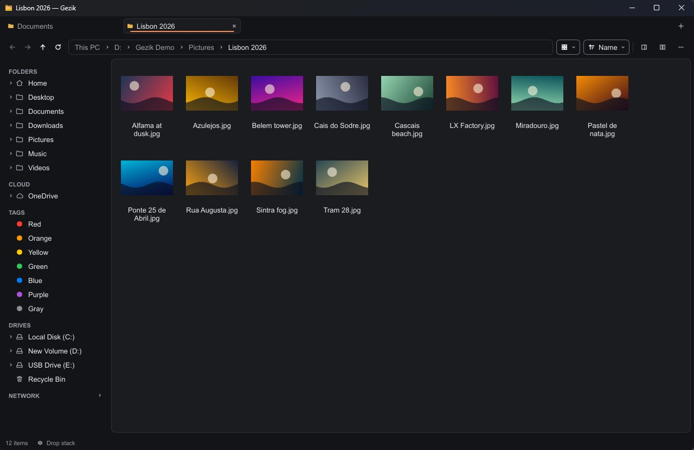
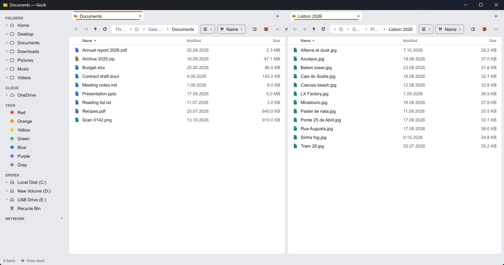

Your files, without the wait.
Gezik is a file manager that opens before you finish the thought. Tabs, two panes, previews, search, Git and phones, in a window that idles in under 6 MB and never waits on the disk.
Free and open source under the MPL 2.0. No account, no telemetry.


Release build on Windows 11, default 900×600 window. Measured with the scripts in the repository: method and full results.
Everything Explorer and Finder do, and the parts they never got to.
Built in Rust, drawn with Slint, one codebase for three systems. Nothing runs until you ask for it: no indexer, no background service, no telemetry.
Files
Copy and move through the system clipboard, drag and drop with folders that spring open, conflicts asked up front, and undo for the whole session.
Batch work
Rename hundreds of files with rules and a live preview. Open archives as folders, convert pictures, audio, video, text and PDF.
Preview
Space shows code in color, logs end to end, PDFs, video and audio, any file as hex, plus camera, album and author details.
Finding things
A filter that narrows the folder as you type, search by name or content (Everything on Windows), saved searches and quick open.
Navigation
Tabs that come back as you left them, pinned folders with colors and icons, and an address bar that runs commands after >.
Layouts
Two panes side by side or stacked, Miller columns, a folder tree, grouping, several windows, and rules that pick a view per folder.
Tags
Color tags, star ratings and comments kept in the files themselves, so Finder and Dolphin read them too.
Git
Each row shows its Git state. Stage, commit, push, pull and switch branch from the menu, with discards going to the trash first.
Phones
Plug in an Android phone and it shows up in the sidebar: browse it, copy both ways, rename and delete, with progress and undo.
Tools
Checksums, folder compare and sync that only ever deletes to the trash, duplicates, a size map, split and join, verified copies.
Network
Computers sharing files nearby, found only when you open the section, for five seconds at most.
Languages
English and Turkish, with German, Spanish, French and Chinese machine-translated. A new language is one text file.
Two panes, a grid of pictures, one keystroke apart.
Every action has a key, and every key can be changed. The command palette finds the rest by name.


- Quick look
- Space
- Second pane
- F3
- Copy to the other pane
- F5
- Command palette
- CtrlShiftP
- Search under this folder
- CtrlE
Change a line, see it now.
- Saved changes apply at once, with no restart.
- A theme only needs the colors it changes; themes from GitHub install in a click and never run code.
- Settings travel as one zip, through a synced folder, or end-to-end encrypted with a secret code.
- Portable mode: one empty file next to Gezik and it runs from a USB stick.
# settings.toml theme = "auto" # follows the system light/dark mode [layout] sidebar = "left" # left | right | hidden density = "comfortable" # compact | comfortable [view] mode = "list" # list | grid | columns folders-first = true # themes/sunset.toml base = "dark" [colors] accent = "#ff8a3d"
Pick your system.
Gezik is in pre-release. Once installed it keeps itself up to date from its GitHub releases, checking at most once a day.
Windowsx64
Signed by Wenlar LLC. Unzip and run gezik.exe; the portable zip keeps its settings next to it.
DownloadmacOSApple silicon and Intel
Signed and notarized by Apple. Drag Gezik.app to Applications.
DownloadLinuxx64
Make it executable (chmod +x) and run it; a .tar.gz is there too. Needs FUSE.
DownloadOpen source, MPL 2.0. Use it, change it, ship it, also commercially.
Files of Gezik you change and share stay open. Read the code, report a bug or translate it into your language on GitHub.